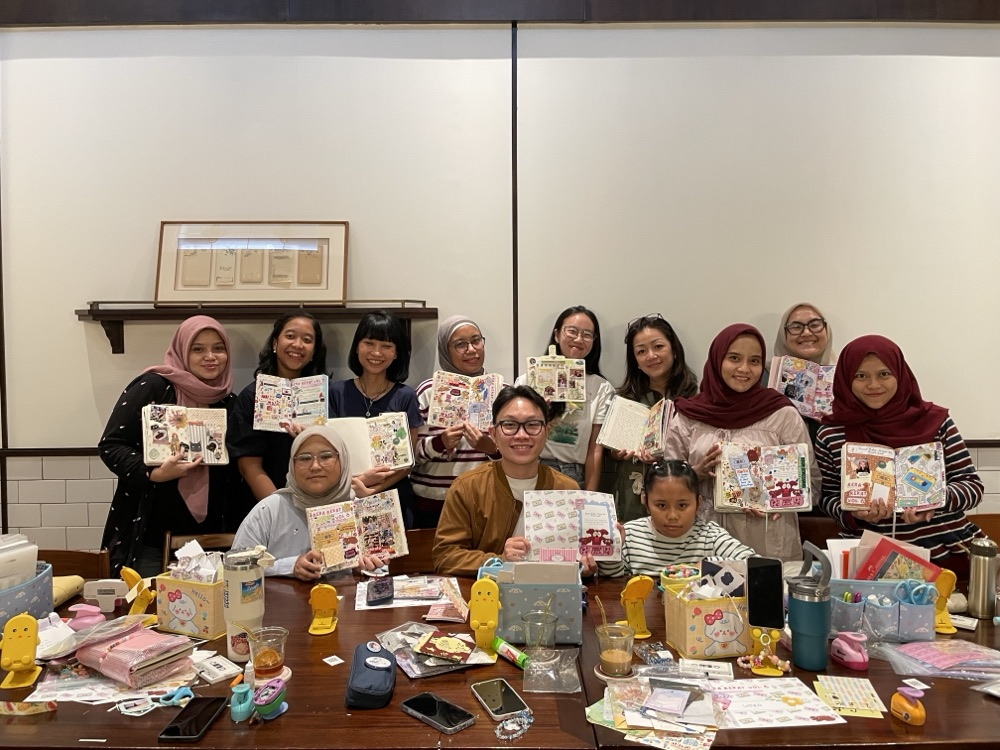

Seminggu Satu
by Arnold
Komunitas journaling & workshop kreatif di Jakarta. Bikin karya unikmu bareng kita! ✨🐾


Jadwal Workshop
Udah jadi warga? Masuk ke Balai Warga
Cerita Warga
Tap fotonya buat nonton di Instagram 📸
Alat & Bahan
Peralatan Journaling
Buat kamu yang mau mulai journaling dan cari rekomendasi alat & bahan yang sering aku pakai.
Lihat Rekomendasi